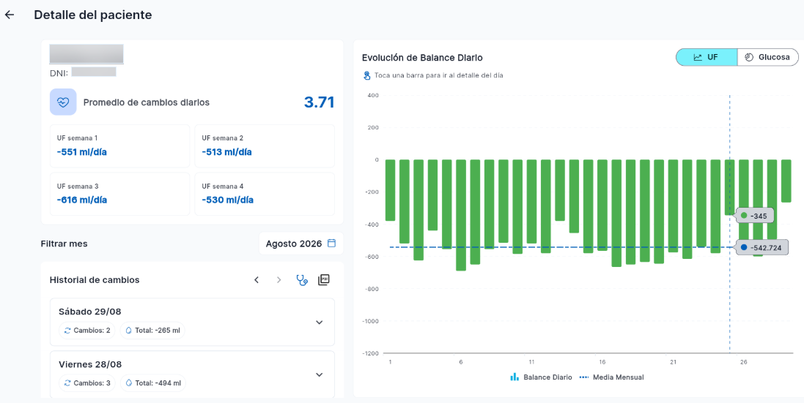
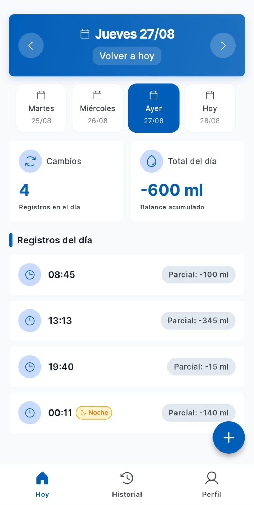
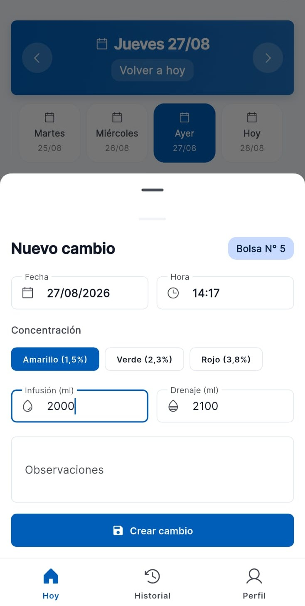
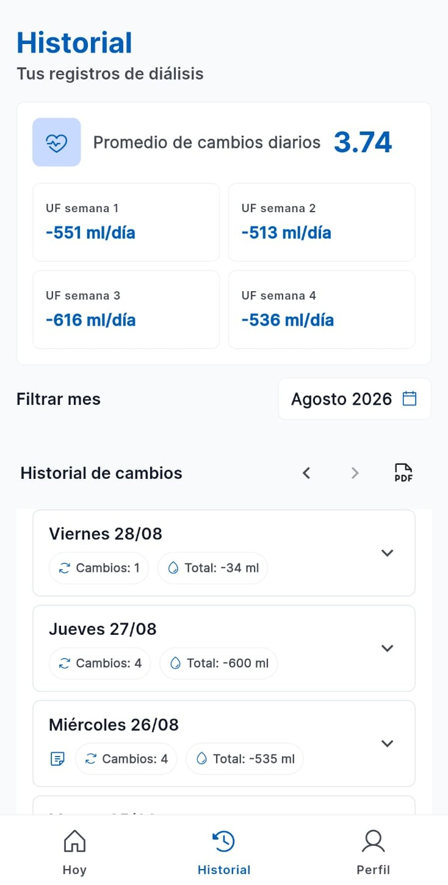
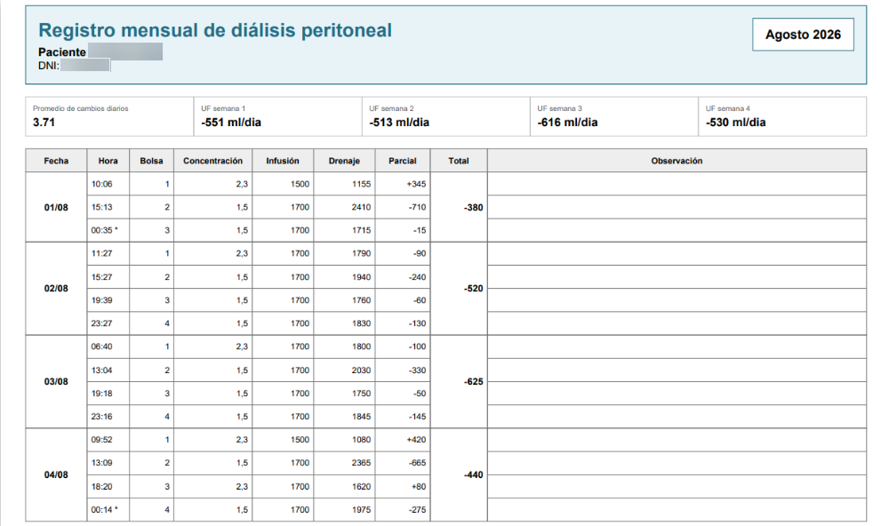

RenApp transforma el registro diario de recambios de diálisis peritoneal en una herramienta simple, trazable y clínicamente útil. Gratuita para el paciente, indispensable para el nefrólogo.

Pacientes en diálisis peritoneal en Argentina
Apps existentes para registro manual (DPCA)
Gratuita para el paciente, siempre
Miles de pacientes registran sus recambios en cuadernos de papel. Los nefrólogos reciben planillas ilegibles y pierden tiempo valioso descifrando datos en cada consulta.
Una herramienta unificada que cierra la brecha entre el cuidado en casa y la supervisión clínica.
Campos predefinidos de fecha y hora. Cálculo automático de balance parcial.
Acceso inmediato a todos los registros, ordenados por día con resumen de cambios y balance total.
Generación del resumen mensual idéntico a la planilla física que el médico ya conoce.
Visualización del promedio de ultrafiltración por semana para seguimiento propio.
Visualización de todos los pacientes vinculados con acceso directo a su detalle clínico mensual.
Evolución diaria del balance con media mensual. Detección visual de tendencias y anomalías.
Exportación del historial estructurado en PDF para integrar al expediente clínico.
Asociación de pacientes existentes al nefrólogo. Detalle del promedio de cambios diarios por paciente.
Cada pantalla fue diseñada pensando en la rutina real del paciente y del nefrólogo.
La pantalla principal muestra los recambios del día, el balance acumulado y un resumen claro por horario. Navegá entre días con un toque para revisar registros anteriores.

Interfaz optimizada para el uso diario. Concentraciones predefinidas y personalizables por paciente, campos numéricos claros y cálculo automático del balance parcial.

Accedé al historial completo ordenado cronológicamente. Filtrá por mes, revisá el promedio de cambios diarios y las UF semanales de cada período.

RenApp genera automáticamente un PDF mensual con el formato idéntico a la planilla física tradicional. Incluye fecha, hora, bolsa, concentración, infusión, drenaje, parcial, total y observaciones.

No competimos con Baxter ni Fresenius. Competimos con el cuaderno de papel.
Funciona para DPCA manual (bolsas) y cualquier cicladora. Solo necesitás un celular.
Sin costos ocultos, sin suscripción. El paciente nunca paga. El valor se captura del lado profesional.
El reporte mensual replica el formato que el nefrólogo ya conoce. Cero curva de aprendizaje.
Pensada para la realidad local: DPCA manual, obras sociales, planillas físicas y consultas presenciales.
Autenticación segura con JWT, datos encriptados y cumplimiento de la Ley 25.326 de Datos Personales.
No está asociada a ningún fabricante de insumos. Funciona con cualquier marca de bolsas y descartables.
La aplicación se encuentra en fase de demostración. Podés probarla directamente desde tu navegador o descargar el APK para Android. Para consultas, escribinos.